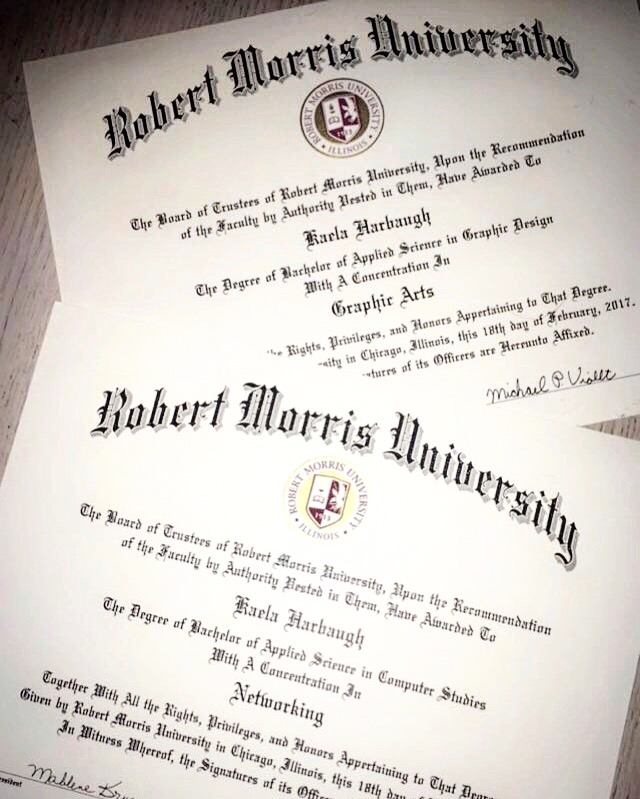
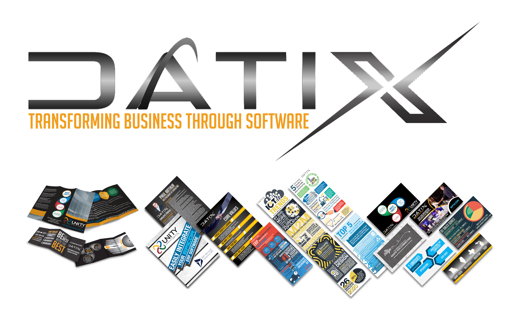

For this assignment, I'd like to share with you, my personal and professional mile stones to date.
Let's get started in 2011. I was 17 years old when I graduated highschool and accepted to and enrolled as a Student Athlete at Robert Morris University in Chicago, Illinois where I would be studing Graphic Design. I would be representing my school while playing Division 1 Womens's Hockey in the American College Hockey Association.

In 2013, I received an Associates Degree in Applied Science. In 2015, I received a Bachelor's in Graphic Design and 2016 received my Bachelor's in Computer Studies.
During my time at Robert Morris, I served two internships -- one for Web Development with Keep On Keeping On Foundation and the other performing Graphic Design work with RMU's Athletic Department. I also gained additional Web Development and Graphic Design experience doing project work for multiple Chicago businesses through the school's ICenter program.
After finishing my dual-degree program at Robert Morris University, I relocated to the St. Louis Metropolitan area to start my career.
To gain more experience in my field, I accepted a Web and Graphic Design Internship at Datix Inc. in September 2017. Late March 2018, I accepted a Part-Time Graphic Design position at Hi-Tec Copy Center. In September 2018, my position at Datix changed to Marketing Associate at the same time I transitioned to Full-Time Employment with Hi-Tec Copy Center. For 8 months I held both positions working a total of 50+ hours a week until April 2019 when I concluded my employment with Datix after wrapping up the 2019 Epicor Insights Conference project assignment.
